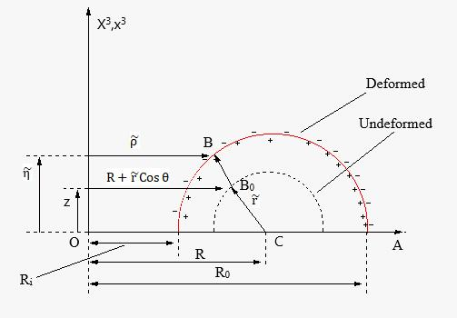

|
|

|
|
JNTUH college of Engineering Hyderabad
2012-2017 |
IITM
2018-2020 |
IISc
2020-present |
|
Project-1
Formability Analysis of Parabolic Cups Drawn from Ni 201 Using single Point Incremental Forming Process:
Numerical simulation of single point incremental forming process (SPIF) for Ni 201 sheet material was carried out using finite element analysis software and Taguchi experimental techniques.
Reduction in thickness during SPIF process of the parabolic cups was estimated. Formability diagrams were drawn based on minor and major strains, and normalized major and minor stresses.
The significant process parameters were identified using analysis of variance (ANOVA). Local thing along the walls of the parabolic cups were also estimated.
It has been found that the maximum thinning ranges from 58% to 61% in the parabolic cups drawn from Ni201 using single point incremental forming process.
|  |
This project mainly focuses on limit point and wrinkling instability of hyperelastic homo-geneous and
isotropic toroidal membrane of initially circular cross section subjected to in-ternal pressure and
voltage applied across the thickness of the membrane. The membranematerial is assumed to be Mooney-Rivlin solid.
Equilibrium equations were formulatedby applying variational principle on total energy of the system comprising
the membrane strain energy along with the free energy associated with polarization induced by voltageand internal energy of gas.
Two point boundary value problem of the membrane was solved using Nelder-Meads optimization technique by constructing optimization problem.
Effect of voltage on principal stretches and Cauchy stress resultants for variable materialparametersα= 0.01,0.1 and 0.3 have investigated in this study.
Stability of symmetricsolutions are studied by using perturbation techniques.
|
| |
{kind=link}